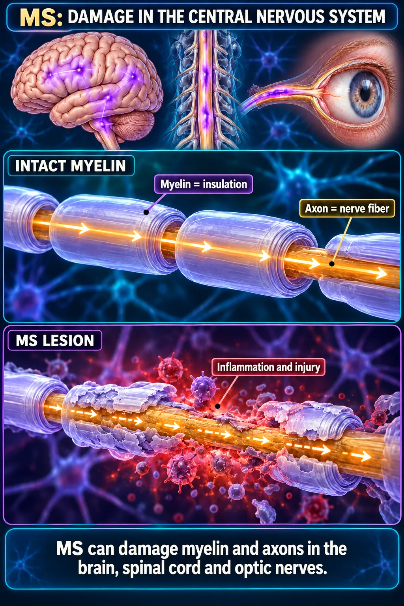
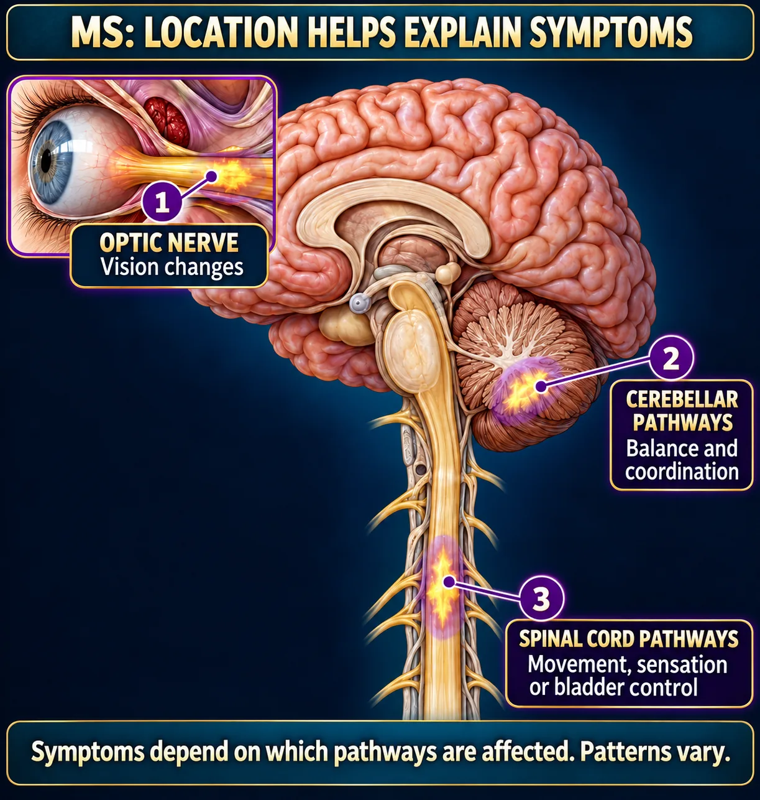
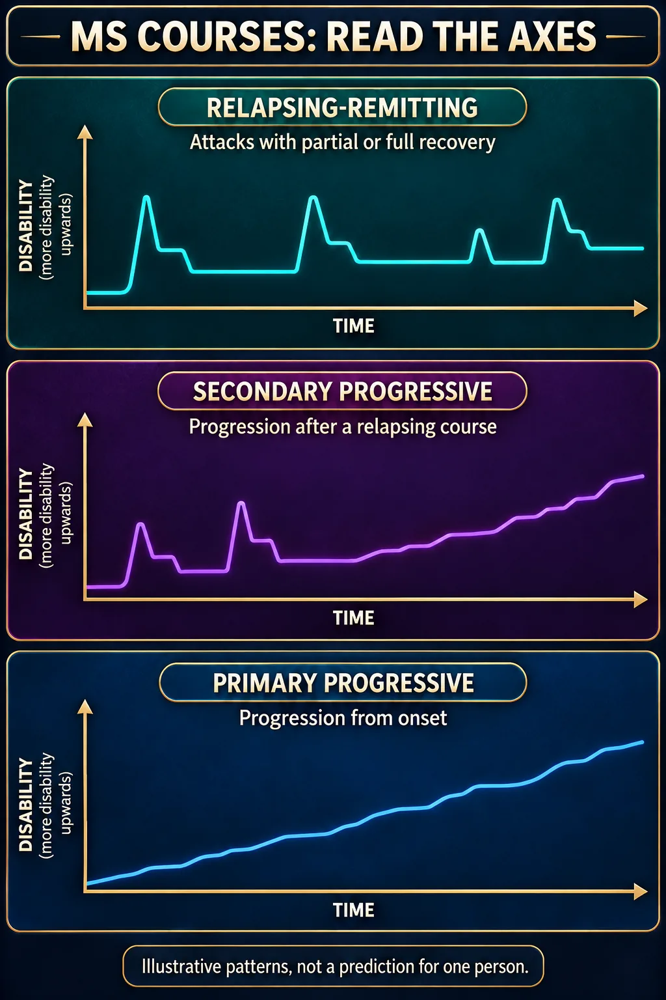
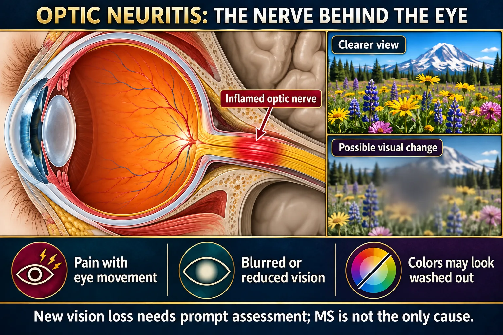
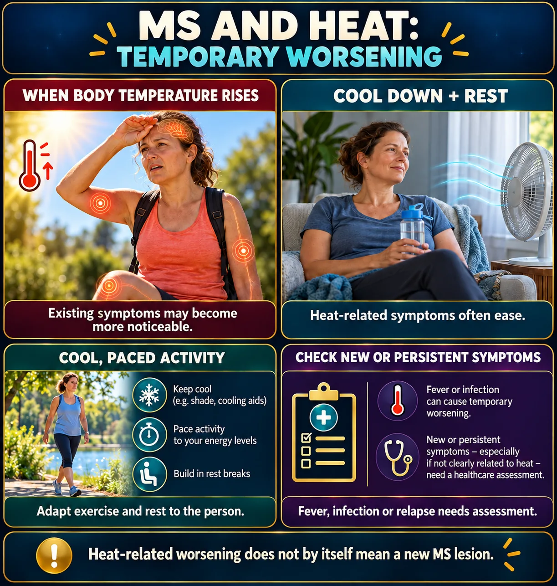

Multiple Sclerosis ⚡
MS = Myelin Sheath destruction · Muscle Spasm & Stiffness · Stay cool
MS is an autoimmune disease in which the body attacks the myelin sheaths of its own CNS white matter — brain, spinal cord and optic nerve. Where the myelin is stripped, a hardened scar (a sclerotic plaque) forms and the nerve can no longer conduct properly. Because plaques land in scattered, unpredictable places, no two patients look the same — which is exactly why the classic pattern is relapsing–remitting. Two teaching points carry most of the marks: avoid overheating, and balance exercise with rest. For the underlying neuron and myelin, see NG-255 Neuro Overview.
📄 Simple Nursing original — opens in Drive →
Preview the Simple Nursing sheet here
WHAT MS DOES
CAUSEAn autoimmune attack on CNS myelin leaves scattered scars — and the scars decide the symptoms.
🧠 MS: damage in the central nervous system

Read the picture
MS affects the central nervous system. The axon is the nerve fiber and myelin is its insulating sheath. Inflammation and injury can damage both, disrupting signaling. The highlighted brain, spinal cord and optic nerves show relevant CNS structures; the glowing marks are teaching cues, not a scan.
Sources: NINDS — Multiple sclerosis
Draw this once and you have understood MS, Guillain-Barré and half of what myelin does. The first difference between the two diseases is WHERE: MS damages the central nervous system, GBS the peripheral nerves. They also differ in cause and course.
🧪 Definition in one sentence
Multiple sclerosis is a chronic autoimmune disease in which the immune system destroys the myelin sheaths of the central nervous system, leaving scattered sclerotic plaques that slow or block nerve conduction.
“Multiple” = many lesions, separated in space and in time. “Sclerosis” = the hardened scar.
📍 MS: location explains the symptoms

Read the picture
Optic nerve involvement may affect vision. Cerebellar pathways contribute to balance and coordination. Spinal cord pathways contribute to movement, sensation and bladder control. Symptoms depend on the pathways involved, and patterns vary. The highlighted sites are simplified examples rather than a complete lesion map.
Sources: NINDS — Multiple sclerosis
Because plaques land anywhere in the CNS (mostly in white matter), the symptom list looks random. It isn't — each symptom maps to a place. Find the place and the symptom makes sense.
⚠️ Who gets it, and what sets it off
- Female more common — roughly 2–3 times more often than males.
- Usually diagnosed between about 20 and 40 years old — a young adult disease.
- More common further from the equator; associated with vitamin D deficiency.
- Preceding viral infection is a recognized association.
- Genetic susceptibility — a family history raises the risk but does not determine it.
- Smoking increases both risk and rate of progression.
🧪 Diagnostics — what confirms it
- MRI (with contrast) of brain and spinal cord — the key test. Shows 3–4 mm sclerotic plaques, classically hugging the ventricles. Contrast enhancement suggests an active lesion.
- Lumbar puncture — CSF shows elevated gamma globulin / oligoclonal bands and raised IgG. Written in some question banks as “high levels of antibodies in CSF”.
- Evoked potentials — measure how long a signal takes to travel; slowed conduction supports demyelination, especially visual evoked potentials in optic neuritis.
- There is no single blood test. Diagnosis needs lesions separated in space and time.
📈 MS courses: read the axes (up = more disability)

Read the picture
Relapsing-remitting MS involves attacks with partial or full recovery. Secondary progressive MS involves progression after a relapsing course. Primary progressive MS involves progression from onset. In every graph, upward means MORE disability and rightward means time. These are illustrative patterns, not an individual prognosis; progression is not necessarily smooth.
Sources: NIH — Multiple sclerosis
The pattern matters for teaching: a person with relapsing–remitting disease needs to know what a real relapse looks like, and that heat-related worsening is not one.
WHAT THE PATIENT NOTICES
CLUESVision, spasticity, sensation, balance, bladder — grouped by where the plaque is.
👁️ Optic neuritis: the nerve behind the eye

Read the picture
Optic neuritis is inflammation of the optic nerve. It may cause pain with eye movement, blurred or reduced vision, and washed-out color perception. New vision loss needs prompt assessment. MS is not the only cause. The visual scene is an illustrative symptom simulation.
Sources: NINDS — Multiple sclerosis
Painful monocular vision loss in a young adult is optic neuritis until proven otherwise, and optic neuritis is very often the first sign of MS. It is not automatically MS, though: new vision loss always needs prompt assessment.
👁️ The symptom list — grouped so it stops feeling random
| Group | What the patient reports | Why |
|---|---|---|
| Visual | Optic neuritis — painful vision loss in one eye, washed-out colors · diplopia (double vision) · nystagmus · blurred vision | Plaques on the optic nerve and in the brainstem eye-movement pathways |
| Motor | Muscle spasticity and stiffness · weakness · painful spasms · foot drop · fatigue that is out of proportion to activity | Plaques in the motor tracts of the brain and cord |
| Sensory | Numbness, tingling, burning, “tight band” sensations · Lhermitte's sign — an electric shock down the spine when the neck is flexed | Plaques in the sensory tracts, especially the cervical cord |
| Cerebellar | Intention tremor, ataxia, wide-based gait, vertigo, scanning (slow, slurred, sing-song) speech | Plaques in the cerebellum and its pathways |
| Bladder / bowel | Urgency, frequency, retention, incontinence · constipation · sexual dysfunction | Plaques in the cord pathways to bladder and bowel |
| Cognitive / mood | Slowed processing, poor short-term memory, depression, emotional lability | Plaques in cerebral white matter |
FATIGUE is the single most commonly reported symptom — and the one most often dismissed.
🧪 Two named signs you will be asked to recognize
😴 Fatigue — the #1 symptom, and how to actually manage it
MS fatigue is not ordinary tiredness. It is out of proportion to activity, worse in the afternoon, worse in heat, and it is invisible — which is why patients get accused of laziness.
- Plan the day around it: hardest tasks in the morning; scheduled rests before exhaustion, not after.
- Energy conservation: sit to work, slide don't lift, batch errands, use a shower chair, delegate.
- Keep cool — heat and fatigue amplify each other.
- Treat the things that make it worse: poor sleep, depression, anemia, hypothyroidism, pain, night-time bladder waking.
- Regular, moderate, cool-environment exercise reduces fatigue over time even though it feels counter-intuitive.
🚨 Relapse or pseudo-relapse? — check the temperature first
So the first questions on a “my MS is flaring” call are: do you have a temperature, any burning when you pass urine, and have you been hot?
✅ Nutrition and the boring things that matter
- Vitamin D — deficiency is associated with MS risk and activity; supplementation is commonly recommended. Check the level rather than guessing.
- High-fiber diet and adequate fluids for the constipation that comes with reduced mobility and bladder-drug side effects.
- Adequate calcium and vitamin D matter even more if the patient has had repeated steroid courses (bone loss) and is less mobile.
- If swallowing is affected: soft or thickened textures, upright to eat, speech-pathology referral.
- Watch weight in both directions — fatigue can cut intake, reduced mobility can add weight.
- No diet cures MS. Be ready to talk honestly about the ones sold online.
🚨 Bladder problems are a real complication, not a nuisance
- Urinary retention → recurrent UTIs → and infection is itself a relapse trigger. A vicious circle.
- Teach a timed voiding schedule; teach intermittent self-catheterization if there is significant residual volume.
- Adequate fluids — restricting fluid to reduce urgency makes UTIs and constipation worse.
- Report new urinary symptoms early; treat infection promptly.
⚠️ Safety consequences of the symptoms
- Falls — from spasticity, ataxia, foot drop, fatigue and visual loss.
- Burns and injury — numb areas cannot feel a hot bath, a hot water bottle or a pressure point. Teach the patient to test water temperature with a thermometer or an unaffected part.
- Aspiration if brainstem plaques cause dysphagia.
- Pressure injury where sensation and mobility are both reduced.
- Driving — visual and reaction-time changes must be discussed honestly.
TRIGGERS AND DAILY LIFE
CARE 1The 4 S's, the heat rule, and how to balance exercise with rest.
🌡️ MS and heat: temporary worsening

Read the picture
A rise in body temperature may temporarily make existing MS symptoms more noticeable. Cooling and rest often help. Keep activity cool and paced with rest breaks. Fever or infection can also worsen symptoms and needs assessment. New or persistent symptoms should be assessed, especially if not clearly heat-related. Heat worsening alone does not prove a new MS lesion.
Sources: NIH — Multiple sclerosis
Two exam items live in this figure: “preparing to place a client with MS in a bathtub with hot water” is the WRONG action, and “rest in air-conditioned surroundings” is the RIGHT one.
🔥 AVOID the 4 S's — the flare-up triggers
✅ Balance exercise with rest — in that order
- 1. Self-care ADLs — the patient does them, with more time and adaptive equipment.
- 2. Gait training, then a cane, then a walker, and a wheelchair only when walking is unsafe.
- 3. Exercise in a COOL room, in short bouts, with rest between. Swimming in a cool pool is ideal — it cools and supports at the same time.
- 4. Plan the day around the fatigue: do the important things when energy is highest, and schedule rest before exhaustion, not after.
Never do all the ADLs for the client. Promote independence — that is the rule for every neuro patient.
🏠 Living-well teaching
- Cooling vest, neck wrap, fans, cold drinks; keep the house cool; shop and exercise early in the day.
- Energy conservation: sit to work, slide rather than lift, batch tasks, use a shower chair.
- Test bath water with a thermometer — numb skin cannot warn you.
- Bowel routine: fluids, fiber, a set toileting time.
- Eye patch (alternate eyes) for troublesome diplopia; scan the room by turning the head.
- Support group, counseling, and a frank conversation about depression — it is common and treatable.
- Pregnancy: relapses often decrease during pregnancy and increase in the months after — plan with the neurologist, and remember several MS drugs are not safe in pregnancy.
DRUGS
CARE 2Steroids for relapses, disease-modifiers for the long game, muscle relaxants for spasticity.
💊 The drug groups — what each one is for
| Drug / class | Purpose | Key nursing points |
|---|---|---|
| Corticosteroids methylprednisolone · prednisone |
Acute relapse only — reduce inflammation and shorten the attack | Short courses. Watch blood glucose, blood pressure, mood, insomnia, infection risk. Do not stop a longer course abruptly. |
| Interferon beta | Disease-modifying — reduces relapse frequency | Flu-like symptoms after injection are very common — give at bedtime, pre-treat as ordered. Monitor liver function and blood counts. Injection-site reactions — rotate sites. |
| Glatiramer acetate | Disease-modifying | Injection-site reactions; occasional transient flushing/chest tightness after a dose |
| Immunosuppressants e.g. cyclosporine, mitoxantrone |
Suppress the autoimmune attack | Report any sign of infection or bleeding. Avoid crowds and live vaccines. Not for pregnant clients. Monitor blood counts and renal function; mitoxantrone is cardiotoxic and has a lifetime dose limit. |
| IVIG | Immune modulation — the antibodies act as a decoy so the immune system attacks them instead | Infusion reactions, headache, fluid overload; monitor renal function |
| Baclofen · tizanidine | Muscle relaxants for spasticity | Drowsiness, dizziness, weakness. Never stop baclofen abruptly — abrupt withdrawal can cause rebound spasticity, fever and seizures. Fall risk. |
| Anticholinergics for bladder · stool softeners · amantadine/modafinil for fatigue · antidepressants | Symptom management | Watch for retention with bladder anticholinergics — it can make things worse |
🚨 Immunosuppression — the teaching that saves a life
- Report any sign of infection immediately: fever, sore throat, cough, burning on urination, a wound that looks angry.
- Report any sign of bleeding: bruising, petechiae, bleeding gums, black stools.
- Avoid crowds and anyone with an infection; meticulous hand hygiene.
- No live vaccines; check with the team before any immunization.
- Not for pregnant clients — discuss contraception before starting.
- Monitor CBC, liver and renal function as ordered.
✅ Managing spasticity without drugs
- Daily stretching and range-of-motion — the single most effective measure.
- Regular position changes; avoid triggers (a full bladder, constipation, pressure injury, tight clothing all worsen spasticity).
- Warmth for comfort — but warm, not hot. A warm pack is fine; a hot bath is not.
- Splints and braces for foot drop; a proper wheelchair and seating assessment.
- Physical therapy is a long-term partnership, not a one-off referral.
MS vs GUILLAIN-BARRÉ
TELL THEM APARTDifferent address, different disease. This comparison is worth learning cold.
↔️ MS and GBS: different locations

Read the picture
MS affects the central nervous system: brain, spinal cord and optic nerves. GBS affects peripheral nerves and nerve roots. The purple and teal highlights identify different anatomical locations; the diseases also differ in mechanisms and course. This one asset is intentionally reused on the GBS and MS pages.
Sources: NINDS — Multiple sclerosis · NINDS — Guillain-Barré syndrome
One is central and lifelong; the other is peripheral and usually recovers. The single most dangerous difference: in Guillain-Barré the paralysis climbs toward the diaphragm.
⭐ How to tell them apart in one line each
❌ The answers that are wrong on MS questions
- ❌ “Preparing to place a client with MS in a bathtub with hot water.” — the classic wrong nursing action.
- ❌ “Complete all the client's ADLs so she can conserve energy.”
- ❌ “A hot pack will loosen the spasticity.”
- ❌ “Stay on strict bed rest during a relapse.”
- ❌ “The interferon will cure the disease.”
- ✅ “Rest in air-conditioned surroundings.” · ✅ “Balance exercise with rest.” · ✅ “Report any sign of infection or bleeding.”
🧠 Where MS sits among the other neuro diseases
- CNS — MS, Parkinson's, Alzheimer's, Huntington's.
- PNS — Guillain-Barré, myasthenia gravis.
- Both — ALS (upper and lower motor neurons).
- Common thread: no drug cures any of them. We slow progression and manage symptoms.
- Common care: promote independence, prevent falls, protect the airway, support the caregiver.